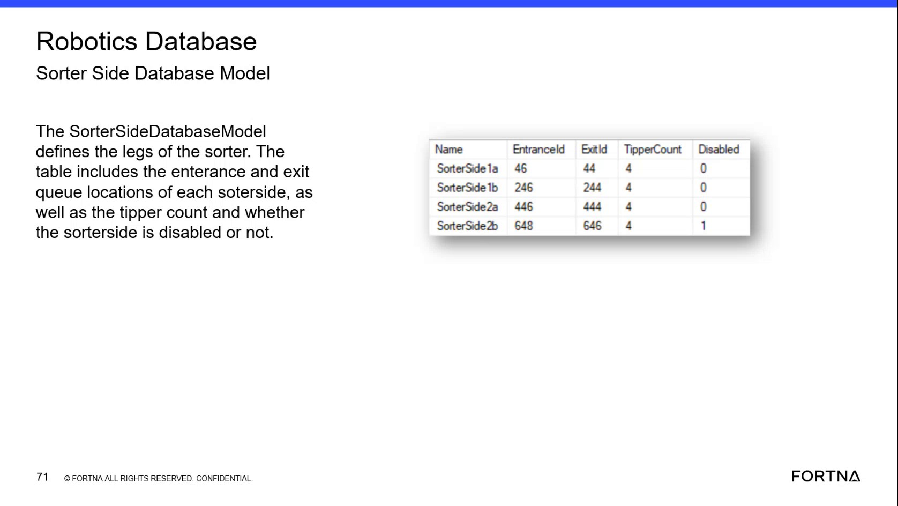

| Procedure ID | proc_check_sorterside_fields_in_ssms_v1 |
|---|---|
| Title | Check SorterSide Entrance, Exit, Tipper Count, and Disabled State in SSMS |
| Procedure Type | diagnostic |
| Primary Role | L2_support |
| Support Safe | Yes |
| Capability Tags | zone_config_state |
| Access Surface | wcs_sql |
| Audience Roles | L2_support, L3_support |
| Failure Pattern Tags | mapping_abnormal |
| Validation Status | needs_sme_review |
| Merge Status | source_finalized |
Use the WCS / Helix DB (SSMS) surface to perform a read-only inspection of the OptiSweep Robotics SorterSideDatabaseModel. Verify the live sorter-side Name, EntranceId, ExitId, TipperCount, and Disabled fields against the available sorter-side configuration examples.
Use this read-only WCS / Helix DB (SSMS) diagnostic when validating sorter-side queue mappings, the number of associated tippers, or whether a sorter side is disabled.

Responsible role: L2_support
Instruction:
In the WCS / Helix DB (SSMS) surface, open SSMS and select the OptiSweep Robotics database.
Expected result:
The OptiSweep Robotics database is selected and available for inspection in SSMS.
Stop or Escalate If:
Responsible role: L2_support
Instruction:
In the WCS / Helix DB (SSMS) surface, locate the SorterSideDatabaseModel table or model in the OptiSweep Robotics database.
Expected result:
The SorterSideDatabaseModel is available for inspection.
Stop or Escalate If:
Responsible role: L2_support
Instruction:
In the WCS / Helix DB (SSMS) surface, find the relevant SorterSide record and inspect its Name, EntranceId, ExitId, TipperCount, and Disabled fields.
Expected result:
The relevant SorterSide row is present with a readable Name, entrance and exit queue IDs, a numeric TipperCount, and a Disabled value.
Stop or Escalate If:
Responsible role: L2_support
Instruction:
In the WCS / Helix DB (SSMS) surface, compare the live SorterSide row with the available examples: SorterSide 1a has EntranceId 46, ExitId 44, TipperCount 4, Disabled 0; SorterSide 1b has EntranceId 246, ExitId 244, TipperCount 4, Disabled 0; SorterSide 2a has EntranceId 446, ExitId 444, TipperCount 4, Disabled 0; and SorterSide 2b has EntranceId 648, ExitId 646, TipperCount 4, Disabled 1.
Expected result:
The live row can be compared field by field with the named sorter-side examples, and the Disabled value is identified as either 0 or 1 where displayed.
Stop or Escalate If: